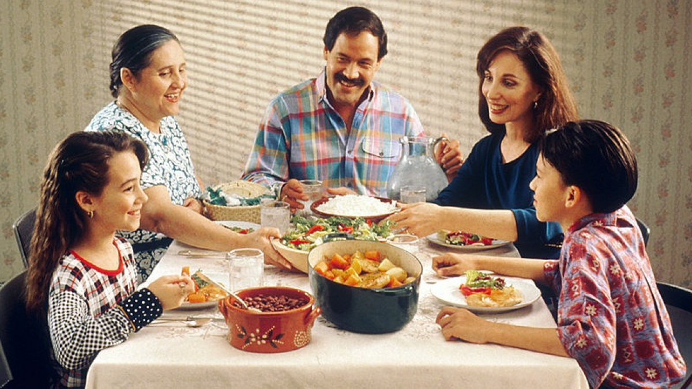

1. Familia nuclear (biparental): La típica formada por padre, madre e hijos, impulsada socialmente.
2. Familia monoparental: Un solo progenitor (generalmente la madre) asume la crianza, a menudo requiriendo apoyo externo por divorcio, viudez o maternidad prematura.
3. Familia adoptiva: Padres que adoptan, desempeñando un rol educador equivalente al biológico.
4. Familia sin hijos: Parejas sin descendencia, ya sea por elección o imposibilidad biológica, lo cual no define la esencia familiar.
5. Familia de padres separados: Progenitores separados que comparten la crianza y deberes, a menudo con la madre conviviendo con los hijos.
6. Familia compuesta: Unión de varias familias nucleares, común tras rupturas de pareja, a veces con hermanastros y más frecuente en entornos rurales/pobres.
7. Familia homoparental: Parejas homosexuales (dos padres o dos madres) con hijos adoptados o biológicos, con desarrollo infantil normal según informes (ej. APA).
8. Familia extensa: Crianza compartida con parientes (tíos, abuelos) en el mismo hogar o convivencia ampliada.
9. Familia reconstruida: Parejas con hijos de relaciones previas que forman un nuevo hogar, uniendo descendencia.
10. Familia transnacional: Miembros distribuidos en distintos países, conectados por tecnología/visitas, común en contextos de migración.
11. Familia de acogida: Hogar temporal para menores que no pueden vivir con sus padres biológicos, ofreciendo estabilidad.
12. Familia elegida: Lazos afectivos voluntarios, a menudo entre amigos, formando redes de apoyo frente a la exclusión.